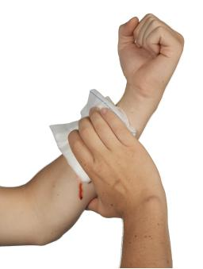
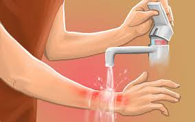
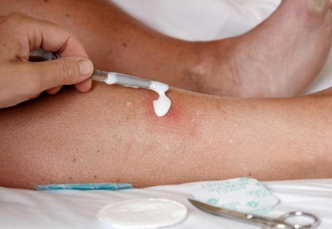
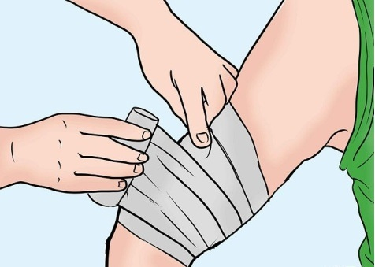
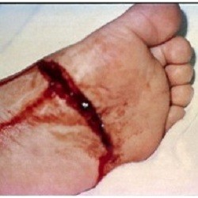
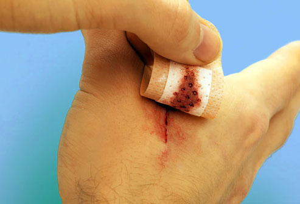
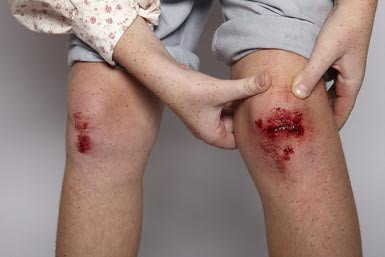

CUTS OR LACERATIONS TREATMENT
CALL EMERGENCY # if:
- A cut is bleeding severely
- Blood is spurting out
- Bleeding can't be stopped after 10 minutes of firm and steady pressure
In general, a cut that needs stitches should be repaired within 6 hours of the injury. The exception is cuts to the face and scalp, which generally can be repaired up to 24 hours after the injury.
Take the following steps for minor cuts.
1. Stop the Bleeding
- Apply direct pressure on the area.
- 
2. Clean and Protect
- Clean the area with warm water and gentle soap.
- 
- Apply an antibiotic ointment to reduce chance of infection.
- 
- Put a sterile bandage on the area. In some people, antibiotic ointments may cause a rash. If this happens, stop using the ointment.
- 
3. Call a Health Care Provider
- The cut is deep or over a joint
- 
- You cannot get the cut or laceration clean
- The injury is a deep puncture wound or the person has not had a recent (within the last 5 to 10 years) tetanus shot or booster
4. Follow Up
- For a minor cut or laceration, remove bandage after a couple of days to promote healing.
- 
- See a health care provider if the cut doesn't heal or shows signs of infection, including redness, swelling, pus, or excessive pain.
- 